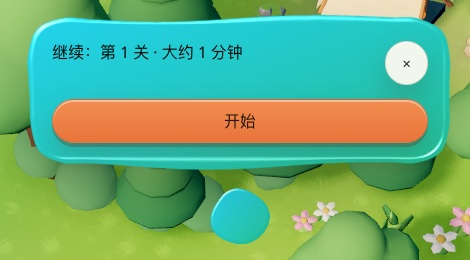

University · 界面风格 · 对比页 · 2026 年 9 月 30 日（晚上再改：更轻） · 讨论稿，不改产品
彩色液体：从「涟」长出来的新主题，和现在的黏土并排看
你下午改了主意：不要扁平了，要把全局 AI「涟」那种液体的样子扩成一套彩色主题，像彩色橡皮泥，从品牌 UI 包里出来。下面右边那一列不是图片，是品牌 UI 包里真的液体组件拼出来的，点一下、按住都有反应。
如果你只有一分钟
- 你的直觉能做出来。「涟」的液体本来就是品牌 UI 包里的一套组件，颜色是可以换的。换成六种橡皮泥色，就是一套彩色液体主题，不是另起一套画法。
- 比黏土多了什么：黏土只有米色和一两种强调色；液体这套每种题型可以有自己的颜色，按下去会被压扁、向两边摊开，卡片放对了会「流」进篮子里融成一团，词块拼对了会连成一整句。
- 有一条要守的规矩：品牌 UI 包自己记着一条实测过的教训：静止的色块一直晃，看起来像坏了。所以平时是静止的彩色软块；只有你按它、放卡片、拼句子的那一下，它才像液体。两种你都能在下面切换着看。
- 晚上照「涟」和你给的参考图重做了：形状用「涟」水滴的参数（边缘 3 个浅鼓包，幅度 3.5；边缘柔化 5）。光和颜色照你的参考图取色：上面浅一点、下面深一点的竖向渐变，顶上一道柔和的高光（光泽 1.5，收在边缘里面一个像素：品牌 UI 包原来的做法会把边缘的抗锯齿吃掉，高光一亮边上就出锯齿），下面一层很淡的影子；颜色是从参考图上取的马卡龙色。选中不再鼓起来，只变色加对勾，所以一列选项左右两端是对齐的；只有按住的那一下才像液体。下面默认显示「像涟」，可以切回「厚」对比。
- 字一律用深色。六种颜色配深色字，对比度都在 6.3 以上，阳光下也看得清。深色模式也用同样亮的颜色，彩块在暗底上更跳。
一、同一屏「猜」：现在的黏土 和 彩色液体
左边是正式版现在的真实截图；右边是真组件。点右边的三个选项，看被选中那块怎么变色；按住「发出去试试」，看它怎么被压扁。
① 现在的产品 真实截图 · 黏土
- 米色底，按钮下面有厚边、渐变和阴影。颜色只有米色、薄荷、橙三种。
② 彩色液体 新主题 · 真组件
- 没选的选项是奶油色软块；选中的那块变成嫩叶绿，前面有个对勾（颜色不是唯一的提示）。「厚」那一档里它还会鼓起来。
- 主按钮是珊瑚色，按住会被压扁、向两边摊开，松手弹回来。
- 现在进行到哪一步（猜）是一颗黄色小水珠。
二、「分一分」和「排一排」：液体最有用的地方
这两屏里，液体不是装饰，是在说事：卡片放对了，它流进那一边；词块拼对了，它们融成一句话。
② 彩色液体 点下面的颜色试试
- 放对：卡片化成一滴，顺着伸出去的「脖子」流进那一池，池子晃一下。放错：卡片不动，下面说为什么。
- 点词块，它从下面飞上去，和前面的词连成一整条紫色的句子，词和词之间的缝会被液体填上。拼错的也能放进去——对不对，要你自己判断。
三、橡皮泥色板：六种颜色，字一律深色
| 颜色 | 像涟（取自你的参考图） | 深色字对比度 | 厚（第一版） | 深色字对比度 |
|---|
| 珊瑚 | #fab29d | 8.77 | #f4876b | 6.27 |
| 向日葵 | #f8dda1 | 11.66 | #f7c948 | 9.86 |
| 嫩叶 | #b0d5bd | 9.63 | #72c58f | 7.43 |
| 晴空 | #b3d3f7 | 9.99 | #6bb3ea | 6.81 |
| 葡萄 | #e1c8f2 | 10.11 | #b39bf0 | 6.52 |
| 泡泡糖 | #fdbfdf | 10.07 | #f59ac2 | 7.56 |
深色字是 #2a2320。标准线是 4.5（正文）和 3（大字），两套都远远超过；参考图上的颜色更浅，对比度反而更高。我试过深色模式换成压深一档的颜色：配深字只有 3.3 到 4.2，配浅字也只有 2.3 到 4.1，都不够，所以深色模式也用这六种亮色。
四、它从哪来，怎么进品牌 UI

正式版地图上现在的「涟」：下面那颗青色水滴是它的身体，上面是它展开的液体面板。9 月 30 日在本机截的。
来源就是「涟」。涟的身体、它展开的那块面板，用的是品牌 UI 包里的液体组件：一块软体，上面打一层高光，受力时按弹簧的规律变形，两块靠近会长出一根「脖子」连起来。这些是包里现成的，右边那列就是直接用它们拼的。
缺的只是「一套颜色」和「一个开关」。现在包里的液体默认只有一种颜色；要加的是：六种橡皮泥色、深色字、以及一个可选的新主题名（比如「彩色液体」），University 打开它，别的产品不受影响。这要给品牌 UI 包发一个新版本，发之前我会先问你。
一条要守的规矩（包里原话的意思）：一屏只让一个东西在流动；只在用户做了什么的时候流动；静止的色块一直晃会像坏了。上面「一直微微流动」那个开关就是让你亲眼看这条：切过去，盯着不动的按钮看几秒。
手机上跑得动吗：液体用的是网页自带的滤镜，包里有「同时最多几个在动」的上限，超了就不画流动效果、只留颜色。老手机和「减少动态」的设置下，直接不动，颜色和字照旧。
五、要你定的三件事
L1 要不要做这套彩色液体主题？
- 做，先只在课文页和岛上游戏用（推荐）：课文页本来就要重做，一起换；看着好再铺到别的页面。
- 做，整个 App 一起换：统一最快，但第 7 版刚用黏土做完的一批页面要重看。
- 先不做，保留黏土。
L2 液体什么时候动？
- 只在你操作时（推荐）：平时是静止的彩色软块，点、放、拼的那一下才流动。
- 一直微微流动：更「活」，但包里记着这样容易像坏了，也更费电。
L3 质感要多重？（晚上按你的意见改过）
- 像涟（推荐）：形状照「涟」（鼓包 3.5），光和颜色照你的参考图（竖向渐变、光泽 1.5 的柔和高光、很淡的影子），高光收在边缘里面，上边缘和下边缘一样平滑。上面默认显示的就是它。用的是品牌 UI 包里现成的两个公开零件（液体组和液体块），不用改包。
- 厚，第一版：有高光、亮边和投影，颜色更饱和，选中会鼓起来。
回我的时候写「L1 选几、L2 选几、L3 选几」就行。
上午那版：扁平马卡龙对比（9 月 30 日下午已否，留作记录；对比度的解释仍然有效）
一、同一屏「猜」，三种样子
左边是正式版产品现在的真实截图（9 月 29 日的构建，我在本机打开后截的）；中间是样机原样；右边是修正版。都用同一句题目、同样三个选项，第二项被选中。
① 现在的产品 真实截图 · 黏土风
- 米色底、按钮是立体的「黏土」：下面有厚边，有渐变和阴影。
- 选中是薄荷绿，主按钮是橙色渐变，按钮上用的是深色字：品牌 UI 包本来就守着对比度这条规矩。
- 现在课里没有 3D 舞台。开了「放」时，上面是我把舞台图拼上去的，看放在一起像不像一家。
② 样机原样 扁平马卡龙
- 没有阴影、没有渐变，靠色块和留白分层。
- 主按钮白字配浅橙，对比度 2.85，太浅。
③ 修正版 提议的新主题
- 颜色不变，字全改成深墨色：主按钮 6.3，选中项 8 以上。
- 按钮和选项下面加一道 3 像素的深边，保留一点「按下去」的手感。
- 灰色小字压深一档（3.7 → 5.6）。
二、同一屏「分一分」小回合、「排一排」
这两屏正式版这次走不到（本机没接 AI，「发送」拿不到回答），左边用 9 月 27 日自动测试截的真实深色图。
② 样机原样
- 「答得出」白字配绿 3.20，「答不出」白字配橙 2.99。
③ 修正版
- 深字配薄荷 8.3、配珊瑚 7.4。按钮颜色和 3D 里的篮子仍是同一对。
- 积木本来就是深字，已经过关（6.6 到 7.5）。用过的积木只是变淡。
- 积木加底边；用过的积木变成虚线空位，一看就知道它去了句子里。
三、你问的：对比度是什么？是为了色盲吗？
一句话：对比度就是字比底亮多少倍，只看深浅，不看颜色。黑字白底最高，是 21；同一种颜色的字写在同色的底上是 1，完全看不见。
不主要是为了色盲。色盲分不清的是某些颜色，比如红和绿；对比度算的是深浅，和颜色无关。制定这个标准的 W3C（管网页标准的国际组织）写得很直白：
对色觉异常的人来说，颜色和饱和度几乎不影响读字；影响读字的是深浅对比。所以对比度的算法，故意不把颜色算进去。
那它是给谁的？给「看深浅的能力弱一点」的人，这种人比想的多：
- 视力正常的人也有一条最低线：3。这是国际人体工学标准给正常视力读正文定的最低对比度。
- 4.5 是给视力差一点的人留的余量。大约相当于 20/40 的视力，W3C 说这是很多八十岁左右老人的常见视力；还包括天生或后来色觉不好、分辨深浅变弱的人。
- 字大可以放宽到 3。粗体 18.5 像素以上、或普通 24 像素以上算大字，笔画粗，浅一点也读得出。
- 公式里本来就算进了一点环境光。真到了阳光下，屏幕反光更强，所有对比度都会往下掉，本来就浅的最先看不清。
样机那两个按钮，「答不出」2.99、主按钮 2.85，是连视力正常的人那条 3 都没到；「答得出」3.20 过了 3，没过 4.5。我们的品牌 UI 包自己也写着：可以点的控件，文字对比度都要到 4.5。
亲手试：换几种看东西的情况
「阳光下」是在上面盖了一层半透明白光，「屏幕调暗」把亮度压到一半，「红绿色弱」用的是 2009 年 Machado 等人的色觉模拟。都是示意，不是医学测量。
算出来的数
「反光下」一栏，是在字和底上各加了同样多的反射光再算，大约是晴天户外看手机的程度。
试一下「红绿色弱」：「答得出」和「答不出」两个按钮，颜色会变得很像。所以按钮上一定要有字，不能只靠绿和橙分对错。这一点和对比度是两回事，修正版也一样要守。
「好看是第一吧？」我的实话
好看很重要，这点我同意。用户愿不愿意打开第二次，第一眼的感觉占很大分量。
但在这个产品里，按钮上的字就是答案本身。看不清，就会点错；点错了，学的人不会怪按钮，只会觉得「是我不会」。小林是在地铁里、在阳光下用手机学的，这正是字最容易看不清的时候。
好消息是两样都能要。你把上面第一部分切到②和③对着看：颜色一样多、一样亮，③只是把字改成深色、底下加了一道边。大多数人第一眼分不出哪个更好看，可是一到「阳光下」，②的按钮字就糊了，③还在。
我不硬卡的地方：灰掉、暂时不能点的按钮，标准本来就不要求对比度；装饰用的字（比如舞台上的小标签「AI」）也不算。
四、它为什么好看？拆开看
把「清新干净」拆成六样。进品牌 UI 时，要搬的是这六样，不是某一个按钮。
暖白纸色的底不是纯白，也不是灰。字用深墨色，不用纯黑。
颜色只放在「东西」上积木、篮子、选中的那项有颜色；界面框架本身几乎没颜色。
和 3D 用同一套颜色我做样机时，积木的颜色就是直接从 3D 小岛的配色里拿的。
没有阴影、渐变、高光层次靠色块和留白，所以看着「干净」。
大圆角、胶囊按钮、粗标题圆的东西让人放松；标题粗，一眼知道这屏要干嘛。
一屏只做一件事这一条其实是一半的「干净」。信息多的页面，换了风格也不会自动干净。
你判断对的地方
平的操作层配立体的世界，是游戏里用了几十年的办法：世界是 3D 的，血条和按钮是平的，一眼分得清「哪里能点」。现在的黏土风按钮本身就是立体的，放在 3D 舞台下面，两层都在「凸出来」，会抢。
颜色和 3D 接近，也是对的：两层用同一套颜色，看起来是一个世界的东西。
要注意的地方
- 对比度：上面说了，白字配浅色底不行，要换成深字。
- 颜色多要有规矩：颜色代表「这个东西是谁」，和 3D 里的物件一一对应；对和错另外留两个专用色，不和积木的颜色混用。否则会变成糖果铺。
- 别丢了手感：品牌 UI 的性格第一条是「有触感」。纯扁平会丢掉按下去的感觉，所以修正版加了一道底边（多邻国也是这么做的）。
- 深色模式要单独调：马卡龙色在深底上会发亮刺眼，按钮可以保持原色，大块的底要换成更暗的版本。
五、怎么放进品牌 UI
项目的规矩是：界面只从品牌 UI 包里拿；包做不到，就改包、发新版本，不在 University 里另起一套。
✕
在 University 里自己写一套样式最快，但违反「品牌 UI 优先」的规矩；以后两套样式一起维护，越走越散。
✕
把品牌 UI 的默认样子改成扁平马卡龙别的产品（TuringPact、SwimmerParty 等）也在用这个包，默认一改，它们全变样。
✓
给品牌 UI 加一套可选的新主题（推荐）包里本来就有「浅色、深色」两套主题，也支持再加一套，还有一张清单能自动检查新主题漏没漏项。阴影已经是可以调的变量，能直接关掉。要新加的是一组「分类色」（六种马卡龙色，每种配好深字和深边），和按钮底边的样子。University 挂上这套主题就行，别的产品不受影响。
时机
品牌 UI 包这两天正在另一条线上做账号控件（刚发了 2.13.0），第 7 版也刚用黏土风做完一批页面（宝箱、徽章、段位）。所以我建议分两步：
- 先在课文页试：新主题只挂在课文阅读器和 3D 舞台下面那一块。课文页正好要重做，改动最集中。
- 看着好，再往别处铺：地图、个人页、付费页这些信息多的页面，挨个看过再换，不一次全换。
六、要你定的三件事
U1要不要做这套新主题？
U2按钮要不要保留一点「按下去」的手感？
U3彩色按钮上的字怎么处理？
你的选择：还没选
出处和做法（点开）
对比度标准：W3C《Understanding SC 1.4.3 Contrast (Minimum)》，页面 2026-06-01 更新，2026-09-30 查阅，原文。其中：正文 4.5:1、大字 3:1；大字是 14pt 粗体（约 18.5px）或 18pt（约 24px）；3:1 是 ISO 9241-3 和 ANSI/HFES 100-1988 给正常视力定的最低线；4.5:1 对应约 20/40 视力，「常被报告为八十岁左右老人的典型视力」；色觉异常的人读字几乎不受颜色影响；不能点的控件不要求对比度。
品牌 UI 包的规矩：SwimmerUIKit 设计系统说明「账号界面原件」一节，「两套主题的可用控件使用不透明底色；静止及悬停/按下的文字对比度均须达到 4.5:1」；主题机制见同一文件「主题化配方」。
对比度数字：按 W3C 公式（相对亮度，比值 = (亮 + 0.05) / (暗 + 0.05)）用样机里的真实色值计算；「反光下」在两边各加 0.1 的相对亮度再算。
截图：①「猜」是 2026-09-29 22:16 的正式版构建，在本机只读打开、关掉 3D 后截的（3D 在无头浏览器里太慢）；「分一分」「排一排」来自 9 月 27 日的自动测试。②③是这一页里的网页，不是截图。